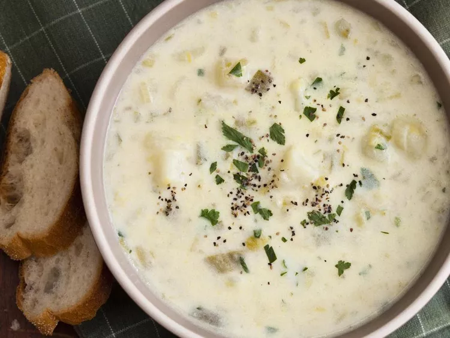

Winter Leek and Potato soup (Adapted from allrecipes)

Description
A great-tasting, hearty and satisfying soup that's perfect for a lunch or to start an otherwise light dinner. Incredibly flavorful and satisfying, it'll please any crowd eager to warm up after a cold outing.
Ingredients
- 2 tablespoons butter, or more if needed
- 2 leeks, cleaned and chopped
- 1/2 cup chopped onion
- 6 potatoes, peeled and cubed
- 4 cups chicken broth
- 1 cup half-and-half
- 4 ounces shredded Cheddar cheese (Optional)
- 1 tablespoon chopped fresh parsley
- 1 teaspoon garlic powder
- salt and ground black pepper to taste
Directions
- Melt butter in a pot over medium heat. Cook and stir leeks and onion until vegetables are tender, about 5 minutes.
- Stir potatoes and chicken broth into onion mixture; simmer until potatoes are tender, 20 to 25 minutes.
- Pour half-and-half into potato soup and continue to simmer until slightly thickened, about 15 minutes more.
- Stir Cheddar cheese, parsley, garlic powder, salt, and black pepper into soup until cheese is melted, about 5 minutes.
- Serve!
More recipes:
Chilaquiles
Roast Beef